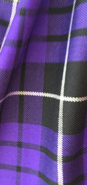

Piobaireachd
The unique and historic music of the Great Highland Bagpipe brought to you by
Audovia Music
Light Music
Piobaireachd
Facebook Group
Alt Pibroch Club
Click on a song name to play or pause and double-click to rewind.

Copyright © 2017 - 2021
Donald G Gray